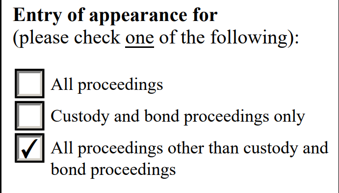

For all mts to be sent to IJ Floyd we have to use the template “Motion-to-Substitute-YULI-IJ-FLOYD”, which can be found in the download section and we have to make sure that this part is contained in the motion:
From now on, the last “Entry of Appearance for” box will be checked for all judges.
You can see an example in the image below.
you also have to be careful with the following items before uploading the E28
Attorney or Representative (please check one of the following):